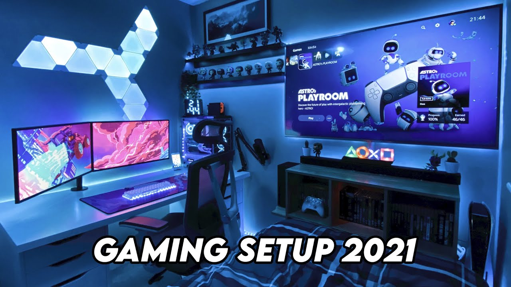
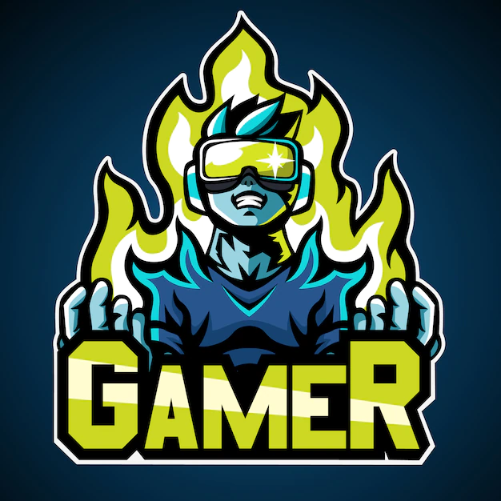
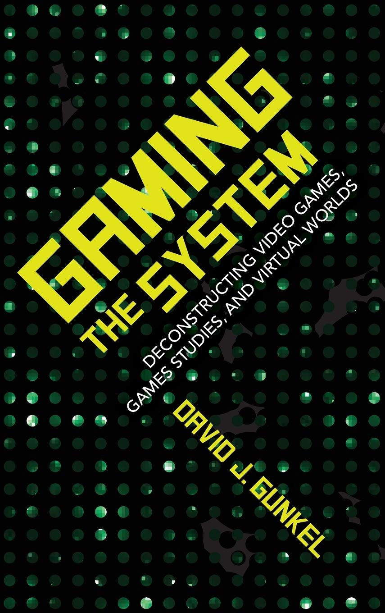

Act of playing games, as in:
Legalized gambling, playing games of chance for money, often referred to in law as "gaming"
Playing a role-playing game, in which players assume fictional roles
Playing a tabletop game, any game played on a flat surface
Playing a video game, an electronic game with a video interface
Esports, competing in eSports
Video game culture
A gamer is a proactive hobbyist who plays interactive games, especially video games, tabletop role-playing games, and skill-based card games, and who plays for usually long periods of time. Some gamers are competitive, meaning they routinely compete in some games for money, prizes, awards or the mere pleasure of competition and overcoming obstacles. In some countries such as the UK and Australia, the term "gaming" can refer to legalized gambling, which can take both traditional and digital forms, through online gambling. There are many different gamer communities around the world. Since the advent of the Internet, many communities take the form of Internet forums or YouTube or Twitch virtual communities, as well as in-person social clubs. Originally a hobby, it has evolved into a profession for some. In 2021, there were an estimated 3.24 billion gamers across the globe.[


Gaming the system (also rigging, abusing, cheating, milking, playing, working, or breaking the system, or gaming or bending the rules) can be defined as using the rules and procedures meant to protect a system to, instead, manipulate the system for a desired outcome.[1]
According to James Rieley, a British advisor to CEOs and an author, structures in companies and organizations (both explicit and implicit policies and procedures, stated goals, and mental models) drive behaviors that are detrimental to long-term organizational success and stifle competition.[2] For some, error is the essence of gaming the system, in which a gap in protocol allows for errant practices that lead to unintended results.[3]
Although the term generally carries negative connotations, gaming the system can be used for benign purposes in the undermining and dismantling of corrupt or oppressive organisations